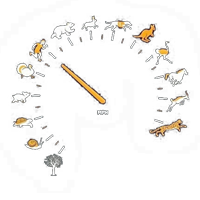

Цікаві факти живої природи

Фізика – наука про природу, про будову, властивості і взаємодію матеріальних тіл і полів, які входять до її складу. Основна мета цієї науки – відкрити і пояснити закони природи, якими визначаються всі фізичні явища. Фізика ґрунтується на експериментально встановлених фактах. Факти залишаються, а тлумачення їх іноді змінюється з історичним розвитком науки, в процесі дедалі глибшого розуміння основних законів природи.
Фізика - це область природознавства, наука, яка вивчає найбільш фундаментальні закономірності, що визначають загальну структуру і еволюцію матеріального світу. Будучи одним з трьох китів, на яких грунтується сучасна система світоустрою, фізика, є наукою про природу в найширшому розумінні цього слова!
Крім того, що вона вивчає матеріальні і енергетичні параметри організації всесвіту, вона також ставить перед собою завдання пояснення і логічного обгрунтування фундаментальних взаємодій в природі, що управляють рухом.
Фізична наука усеосяжна у своєму прагненні охопити якомога більше і як можна детальніше описати те, що потрапляє у поле зору її апологетів, і тому з повним правом може претендувати на почесне звання королеви наук!
-
Лисиця, тікаючи від собаки,яка її переслідує, часто рятується тим, що раптово робить різкі рухи в сторону саме в ті моменти, коли собака готова схопити її зубами. Чому собаці важко зловити лисицю?
Лисиця раптово змінює напрямок руху, собака ж деякий час за інерцією рухається в початковому напрямку, тому не може слідувати за лисицею.
-
Чому при прополці не слід занадто різко висмикувати бур'яни з землі навіть у тому випадку, коли вони слабо утримуються в ґрунті?
При різкому вириванні коріння рослини не встигає прийти в рух і стебло обривається. Коріння бур'янів, яке залишається в ґрунті, знову швидко проростає.
-
Яким чином деякі бобові рослини використовують властивість інерції для розкидання свого насіння?
Дозрілі стручки бобових рослин, швидко розкриваючись, описують дуги. У цей час насіння, відриваючись від місця прикріплення, за інерцією рухаються по дотичній до кола в сторони.
-
Виходячи з води, тварини обтрушуються. Який фізичний закон використовується ними при цьому?
Закон інерції.
-
Які фізичні закони використовуються при сортуванні зерен віялкою?
У потоці повітря зерна, що мають приблизно однакову форму і обсяг, але різну масу, набувають неоднакові прискорення; легкі зерна набувають більшу прискорення, тому вони відлітають далі, ніж важкі.
-
Яке значення має пружне волосся на підошві ніг зайця?
Пружні волосся на підошві ніг зайця подовжують час гальмування при стрибку і тому послаблюють силу удару.
-
Чому дрібні тварини більш рухливі, ніж великі?
В організмі тварини сила створюється м‘язами. Отже, рухливість тварини тим більше, чим більше м‘язова сила, і чим менше його маса (а = F/m).
-
Від чого залежить величина додаткового навантаження, на людину, яка знаходиться у ракеті,що підіймається: від прискорення чи від швидкості, з якою вона рухається?
Перевантаження людини в ракеті залежить від прискорення, а не від швидкості, тобто існує лише в моменти підйому і спуску ракети і при зміні напрямку польоту.
-
Меч-риба відома як рекордсмен серед морських плавців. Її швидкість досягає 80 - 90 км/ч, а меч здатний пробити досить товсту обшивку судна. Чому ж риба не страждає від такого удару?
У голові риби біля основи меча є гідравлічний амортизатор - невеликі порожнини наповнені жиром. Вони і сприяють пом'якшення удару. Крім того, у меч-риби дуже товсті прокладки між хребцями, що також зменшує силу поштовху.
-
Чому рульовий на гребному човні, нахиляючи своє тіло в такт гребцям, збільшує швидкість човна ?
Коли рульовий нахиляється вперед, човен відштовхується назад. Але веслярі, впираючись веслами у воду, перешкоджають цьому. При відхиленні рульового човен просувається вперед - йому ніщо не перешкоджає, оскільки в цей час весла веслярів знаходяться в повітрі.
-
Чи існують тварини, що рухаються за образом ракети?
У цілого ряду морських тварин – каракатиць, спрутів, кальмарів - між головою і тулубом на черевній стороні є коротка конусоподібна трубка. Вона з’єднується з порожниною, розташованою між зовнішнім покривом і самим тілом. Порожнина через щілину заповнюється водою. Потім скороченням мускулатури щілина закривається і вода виштовхується з великою швидкістю через воронку. Наповнення порожнини водою і виштовхування водяного струменя слідують ритмічно одне за одним. За рахунок реактивної дії струменя води тварина швидко переміщається. Каракатиця може встановлювати воронку під різними кутами до свого тіла і завдяки цьому змінювати напрямок руху.
-
Для чого білці потрібен великий хвіст? А лисиці?
Білка робить великі стрибки з дерева на дерево. Хвіст допомагає їй: він є своєрідним стабілізатором. Хвіст лисиці допомагає їй робити різкі повороти при швидкому бігу. Це свого роду повітряне кермо.
-
Чому щука плаває у воді значно швидше багатьох інших риб?
Загострена форма голови щуки відчуває малий опір води, тому щука плаває дуже швидко.
-
Для чого деякі риби при швидкому русі притискають до себе плавники?
Щоб зменшити опір руху.
-
Як відомо, деякі птахи під час далеких перельотів розміщуються ланцюжком або клином . У чому причина такого розташування?
Найбільш сильний птах летить попереду. Повітря оточує йоготіло так, як вода ніс і кіль корабля. Цим обтіканням пояснюється гострий кут клину. В межах даного кута птахи легко просуваються вперед, вони інстинктивно вгадують мінімум опору і відчувають, чи знаходиться кожна з них в правильному положенні щодо провідної птиці. Розташування птахів ланцюжком, крім того, пояснюється ще однією важливою причиною. Змахи крил передньої птиці створюють повітряну хвилю, яка переносить деяку енергію і полегшує рух крил найбільш слабких птахів, що летять зазвичай позаду. Таким чином, птахи, що летять клином або ланцюжком, пов‘язані між собою повітряною хвилею і робота їхніх крил здійснюється в резонанс. Це підтверджується тим фактом, що якщо уявною лінією з‘єднати кінці крил птахів в певний момент часу, то вийде синусоїда.
-
Чому при ходьбі люди розмахують руками?
Коли людина переміщує ногу вперед, трохи вперед зміщується також центр ваги. Щоб зберегти початкове положення центру тяжіння, руку відводять назад. Таке чергування положень рук і ніг повторюється при кожному кроці.
-
Чому качки і гуси ходять, перевалюючись з ноги на ногу?
У гусей і качок лапи широко розставлені, тому, щоб зберегти рівновагу при ходьбі, їм доводиться перевалювати тіло так, щоб вертикальна лінія, що проходить через центр ваги, проходила через точку опори, тобто лапу.
-
В якому випадку людина виконує більшу роботу: коли пересувається маленькими кроками чи коли робить великі кроки?
Коли людина робить маленькі кроки, робота з підняття власного тіла буде менше, оскільки центр ваги піднімається на невелику відстань.
-
У густому лісі завжди можна зустріти повалені вітром дерева, а у відкритому полі, де вітер набагато сильніше, дерева звалюються вітром рідко. Чим це пояснюється?
В тіні лісу нижні гілки дерев відмирають і крона знаходиться вгорі. Центр ваги дерева також переміщається вгору, і воно стає менш стійким. У дерева, що росте на відкритому місці, крона розташована нижче. Центр ваги такого дерева лежить ближче до коріння, і воно краще протистоїть натиску вітру.
-
Чи може центр ваги тіла людини лежати поза тілом, і якщо може, то за яких умов?
Положення центру тяжіння в тілі людини змінюється в залежності від положення тулуба і кінцівок. Якщо людина нахиляється, то її центр ваги може знаходитися поза тілом.